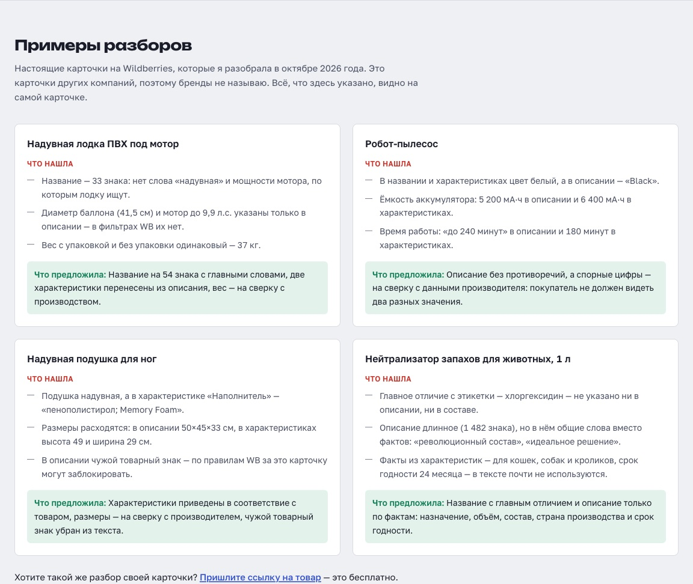
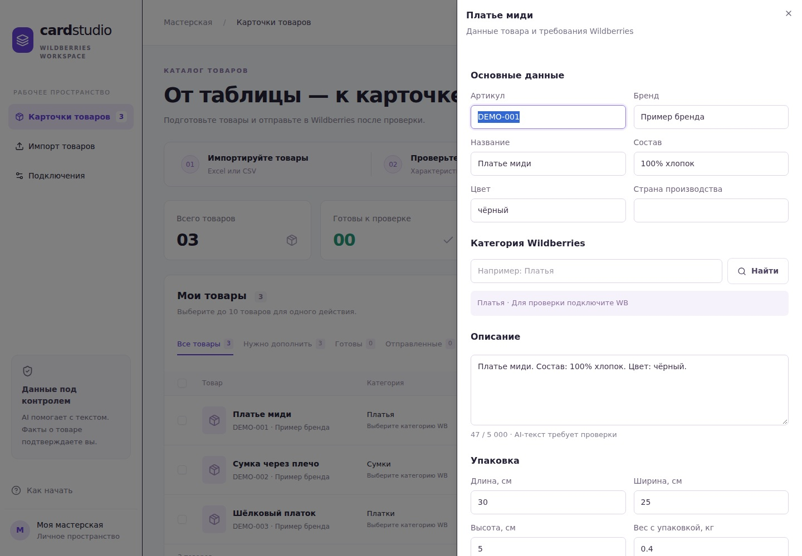

Who it is for
Sellers who are hiring a person for their cards
Many Wildberries sellers post vacancies for a content manager just to fill in and fix product cards. Card Studio lets me do this work as an outside service: the client pays for finished cards in their own seller account instead of a salary.
How it works
Spreadsheet or seller account → checked cards → approval → WB
The client sends a supplier price list or gives access to the Content section of their WB account. The service picks the WB category, fills characteristics from WB reference lists, writes the title and description only from known facts and lists what is missing. The client approves each card by link without registration; then new cards are created and existing ones are updated in the seller account.
What is implemented
New cards and safe updates of existing ones
Excel and CSV import with columns recognised by their names, and loading existing cards from the seller account by article or all at once. Updates keep sizes, barcodes and photos from WB, because the WB update method overwrites the whole card. A job queue for long operations, WB errors in plain language, a review link for the client, a monthly counter of created and updated cards for invoicing, and a free card review by WB link built on public storefront data. Core logic is covered by automated tests.
Card reviews
What real cards are missing
In October 2026 I reviewed open Wildberries cards of companies that were hiring for this work. Brands are hidden; every point can be checked on the card itself.
- Inflatable PVC boat: a 33-character title without the words buyers search for; tube diameter and motor power only in the description.
- Robot vacuum: white in the title, «Black» in the description; two different battery capacities and run times.
- Inflatable foot rest: «Memory Foam» filling for an inflatable product, conflicting dimensions, another company's trademark in the text.
- Pet odour neutraliser: the key ingredient from the label is missing from the card; a long description without facts.

Status and limits
Live service, first clients ahead
The website and the service are live, and I am offering the work to companies that are hiring for card management. No paid clients or measured time savings are claimed yet. Cards are created and updated through the official WB API; the first live update will be checked on a single card with the first client. Infographics, prices, stock and merging cards are outside the service.
